Offizielles Programm: Fahrt zum Sewansee (größter See des Kaukasus) mit Klosterstopps, weiter über Molokan-Dörfer mit traditioneller Tee-Einkehr, Übernachtung in Haghpat mit Blick in die Debed-Schlucht.
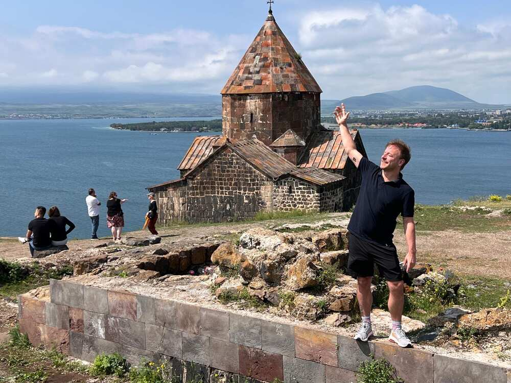

Pferd für Fotomotive am Klosterzugang, im Hintergrund beide Kirchen der Anlage – Surb Arakelots und die kleinere Surb Astvatsatsin.

Laufender Gottesdienst in der Kirche – Sevanavank ist kein Museum, sondern weiterhin aktiver Wallfahrtsort mit regelmäßigen Gottesdiensten.

Detailaufnahme eines Chatschkars (Kreuzstein) – auf dem Klostergelände stehen mehrere dieser kunstvoll gemeißelten Steine.
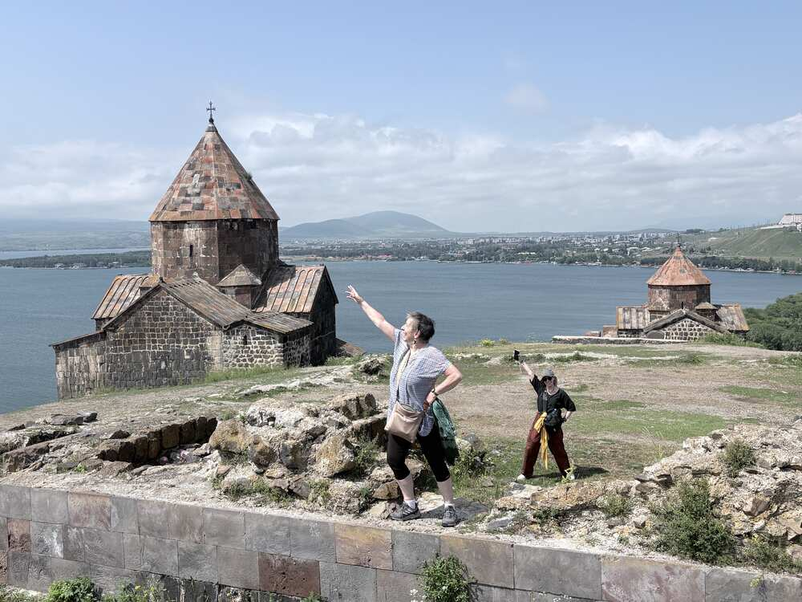
Hintergrund Molokanen: Russische Glaubensgemeinschaft, im 19. Jh. wegen ihres Abweichens von der orthodoxen Kirche in den Kaukasus verbannt. Name kommt von "Moloko" (Milch) – sie tranken auch während orthodoxer Fastenzeiten Milch. Bis heute eigene Dörfer mit eigener Kultur in Armenien.
Mittagessen bei der Molokan-Gemeinde: Einkehr in einem Molokan-Haus in einem der Dörfer nördlich des Sewansees – Gruppenfoto im Hof, dazu ein lokales Buch über die Gemeinschaft ("Молокане: Маленькая Россия на севере Армении" – "Molokanen: Kleines Russland im Norden Armeniens"), das Alltagsfotos der Dörfer zeigt: Traktoren, Feldarbeit, selbstgebackenes Brot.


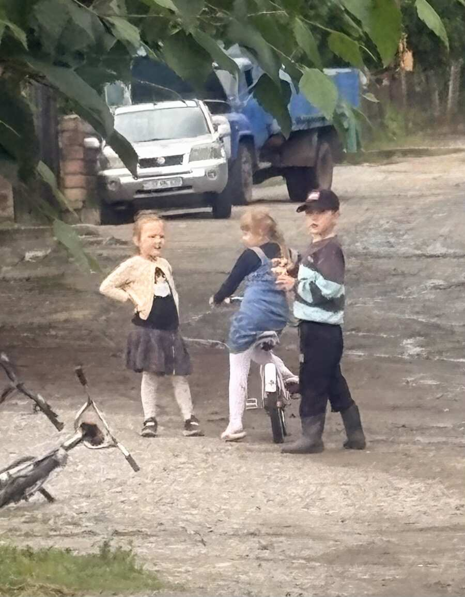
Kinder auf der Dorfstraße – das Alltagsbild eines Molokan-Dorfes, wenige Kilometer und doch eine andere Welt gegenüber Jerewan.
Dilidschan – die „armenische Schweiz“: Kurstadt im Nadelwald auf 1.500 m, seit Sowjetzeiten Sommerfrische für Moskauer Funktionäre und Rückzugsort für Künstler und Schriftsteller. Der Legende nach benannt nach einem Hirten Dili, den sein Herr töten ließ, weil er sich in dessen Tochter verliebt hatte – seine Mutter soll tagelang klagend „Dili jan, Dili jan“ durch die Täler gerufen haben („jan“ ist ein armenischer Kosename, etwa „liebe/r“).

Blick über die Dächer: Sonnenkollektoren und Solarthermie gehören mittlerweile zum Straßenbild – ein sichtbares Zeichen dafür, wie viel Investitionskapital in den letzten zwei Jahrzehnten in diese kleine Stadt geflossen ist.
Scharämbejan-Straße: Die vermeintliche „Altstadt“ im Zentrum ist ehrlicherweise keine gewachsene, sondern eine von der Tufenkian-Stiftung rekonstruierte Kulisse aus Holzbalkonhäusern des frühen 20. Jahrhunderts – heute Hotel, Museum und Souvenirgassen in einem. Wer das weiß, genießt es trotzdem, nur eben mit realistischerem Blick als der durchschnittliche Reiseführer suggeriert.
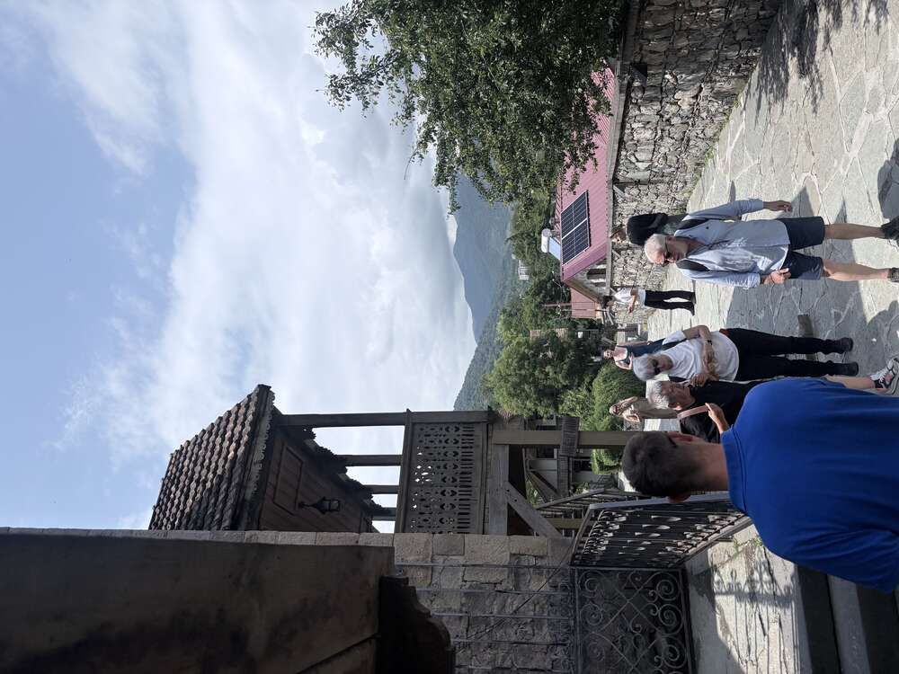
Rezeption des Tufenkian-Hotelkomplexes an der Scharambejan-Straße – Schnitzbalkone, Bruchstein, nachgebautes 19. Jahrhundert.
Insider-Fakt: Am Kreisverkehr im Zentrum steht ein Sowjet-Denkmal für den Kultfilm Mimino (1977) – obwohl der Film gar nicht in Dilidschan gedreht wurde. Die Stadt wird darin nur in einem einzigen Dialog erwähnt: Ein Armenier prahlt, sein Leitungswasser sei weltweit das zweitbeste nach San Francisco. Dieser eine Satz reichte den Einheimischen, um ihrer Stadt ein eigenes Denkmal zu bauen – ein sehr armenischer Sinn für Selbstironie und Lokalstolz zugleich.
Wiederbelebung mit Oligarchengeld: Die auffällig gute Infrastruktur – Solaranlagen, sanierte Parks, die Elite-Privatschule UWC Dilijan mit Schülern aus über 80 Ländern – geht größtenteils auf die IDeA Foundation des Investmentbankers Ruben Vardanyan und seiner Frau Veronika Zonabend zurück, die seit den 2000ern rund 236 Mio. US-Dollar in die Stadt gesteckt haben. Bitterer Beigeschmack der aktuellen Lage: Vardanyan sitzt seit 2023 in Baku in Haft – als einer der prominentesten armenischen Gefangenen im Kontext des Karabach-Konflikts, während seine Stadt weiter als Armeniens Vorzeigeort für Bildung und Tourismus gilt.
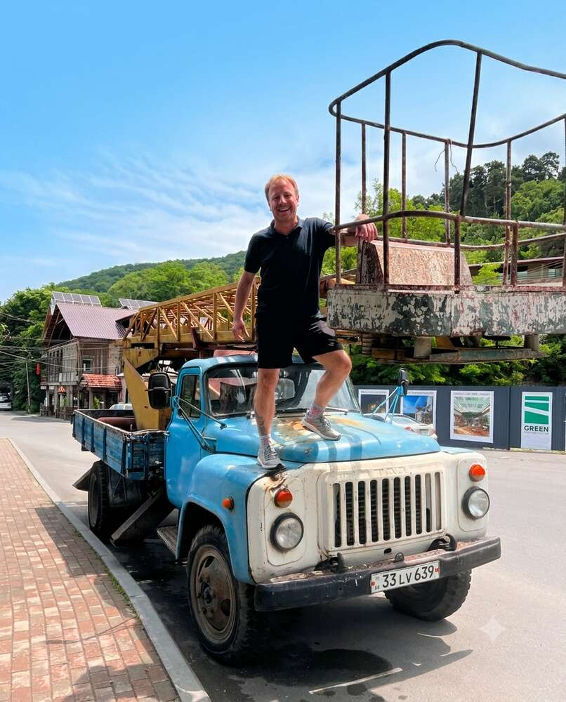
Ein bisschen Quatsch machen gehört auch zur Kultur: alter sowjetischer GAZ-Lastwagen mit Kranaufbau, mitten auf der Straße als Fotomotiv geparkt – kein Museumsstück, sondern ganz selbstverständlich Teil des Ortsbilds.
Alawerdi – die tote Kupferstadt: Auf dem Weg durch die Debed-Schlucht taucht unvermittelt dieses Bild auf: eine ganze Industriestadt, in einen enger werdenden Canyon gebaut, dominiert von einem gemauerten Schornstein, dahinter schneebedeckte Gipfel des Kleinen Kaukasus. Die Kupferhütte wurde 1770 unter dem georgischen König Erekle II. gegründet und lieferte um 1900 rund ein Viertel des gesamten Kupfers des Russischen Reiches. In der Sowjetzeit war Alawerdi einer der bedeutendsten Industriestandorte Südkaukasiens.

2018 wurde der Betrieb endgültig eingestellt – offiziell wegen Nichteinhaltung von Umweltauflagen, nachdem Jahrzehnte der Verhüttung Boden, Luft und den Debed-Fluss verseucht hatten. Was bleibt, ist eine der eindrücklichsten Industrieruinen des Kaukasus: zu groß und zu giftig zum Abreißen, zu teuer zum Sanieren. Ein Sinnbild für den Bruch, den viele Regionen Armeniens seit 1991 erlebt haben – ganze Städte, die von einem einzigen Sowjetbetrieb lebten und nach dessen Ende ohne Alternative dastanden.
Kontext: Direkt oberhalb dieser Schlucht liegen die UNESCO-Klöster Haghpat und Sanahin – im selben Blickfeld also jahrtausendealte Kirchenbaukunst und die Ruinen einer 250 Jahre alten Kupferindustrie. Dieser Kontrast aus Spiritualität und Schwerindustrie auf engstem Raum ist typisch für die Region Lori und selten so kompakt zu erleben wie hier.
Kloster Sanahin: Nur vier Kilometer von Haghpat entfernt, auf der anderen Seite derselben Schlucht, liegt das Schwesterkloster Sanahin – beide um 966/976 von Königin Chosrowanusch gestiftet. Der Name bedeutet wörtlich „Dieses ist älter als jenes“ – ein bis heute ungeklärter Wettstreit der beiden Klöster um den älteren Rang. Seit 1996 gemeinsam mit Haghpat UNESCO-Weltkulturerbe.

Kirche und Kegeldach von Sanahin, im Hintergrund dieselben Bergketten des Kleinen Kaukasus wie drüben in Haghpat – beide Klöster liegen buchstäblich in Sichtweite zueinander.
Gawit und Bücherdepot: Der dreischiffige Gawit vor der Surb-Astvatsatsin-Kirche wurde 1211 von Fürst Vatscheh Vatschutjan errichtet – zwei Reihen mit je drei unterschiedlich verzierten Säulen teilen den Raum. Bemerkenswert ist zudem das 1063 errichtete Bücherdepot mit seiner reich verzierten Kuppel und dem zentralen Lichtschacht, in dem heute Chatschkare und liturgische Steinfragmente ausgestellt sind.

Bücherdepot von Sanahin: gestaffelte Kuppelringe über einem Raum voller Chatschkare und Steinfragmente – einst Aufbewahrungsort wertvoller Handschriften, heute eine Art Lapidarium.
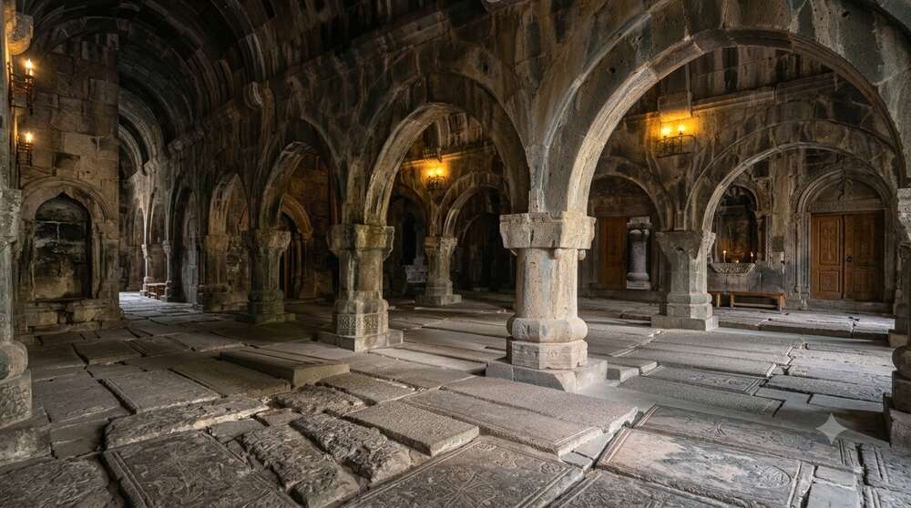
Der Gawit von Sanahin bei Kerzenlicht – drei Schiffe, unzählige Säulen, jede einzelne mit einem anderen Kapitell verziert.
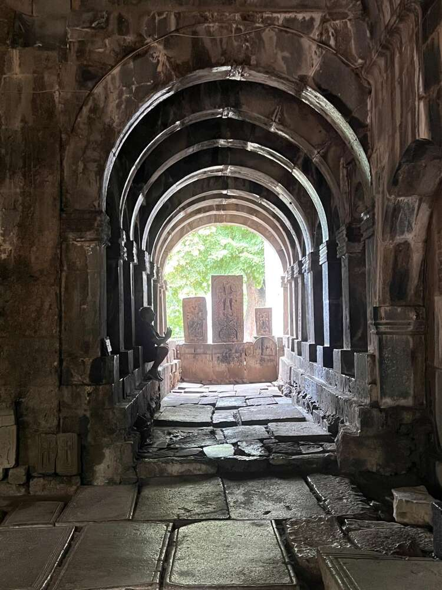
Blick durch die gestaffelten Rundbogenarkaden hinaus zu den Chatschkaren im Klosterhof – das Wechselspiel aus Licht und Schatten ist in Sanahin genauso eindrücklich wie in Haghpat.
Insider-Fakt: Im Dorf Sanahin, direkt neben dem Kloster, wurden die Brüder Anastas und Artjom Mikojan geboren. Anastas stieg zum langjährigen Staatsoberhaupt der Sowjetunion auf (Vorsitzender des Obersten Sowjets unter Lenin bis Breschnew – daher der russische Spruch „von Iljitsch zu Iljitsch ohne Herzinfarkt und Schlaganfall“). Sein Bruder Artjom entwickelte gemeinsam mit Michail Gurewitsch die legendären MiG-Kampfjets – das „Mi“ in MiG steht für Mikojan. Lesen und Schreiben lernte er als Kind bei einem Mönch im Kloster Sanahin. Ein kleines Mikojan-Brüder-Museum im Dorf zeigt heute unter anderem eine MiG-21.

Ein bisschen albern werden gehört dazu: ein liturgisches Tuch aus der Kirche kurzerhand als Kopfbedeckung zweckentfremdet – die Klostermauern von Sanahin als Fotokulisse.
Kloster Haghpat: Halbwegs den Hang hinauf über der Debed-Schlucht gebaut, 976 von Königin Chosrowanusch gegründet – Frau des Bagratiden-Königs Aschot III. und zugleich Bauherrin des Schwesterklosters Sanahin, vier Kilometer entfernt auf der anderen Seite der Schlucht. Der Name bedeutet sinngemäß „starke Mauer“ oder „festes Dach“ – Haghpat war immer auch Wehrkloster, nicht nur Gebetsort. Seit 1996 UNESCO-Weltkulturerbe, gemeinsam mit Sanahin.
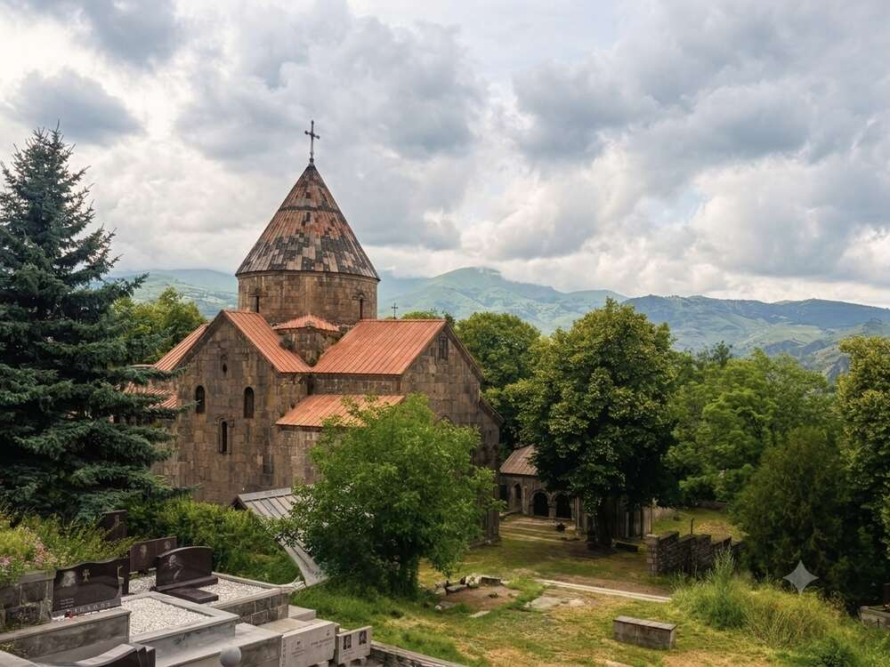
Die Surb-Nschan-Kirche (Heiligkreuz-Kirche, 976–991) mit ihrem charakteristischen Kegeldach ist der älteste Teil der Anlage – im Hintergrund der Kleine Kaukasus, der Georgien von Armenien trennt.
Der Gawit: Um 1210 anstelle eines Mausoleums errichtet, ist die Vorhalle von Haghpat ein für mittelalterliche armenische Kirchenbaukunst typischer, aber ungewöhnlich groß ausgefallener Gawit – Versammlungsraum, Lehrsaal und Begräbnisstätte in einem. Das Dach ruht auf vier zentralen Säulen, durchbrochen vom „Jerdik“, einer zentralen Dachluke, durch die Licht in gestaffelten Ringen auf den Steinboden fällt – eine Bauform, die direkt auf die armenische Holzbautradition zurückgeht.
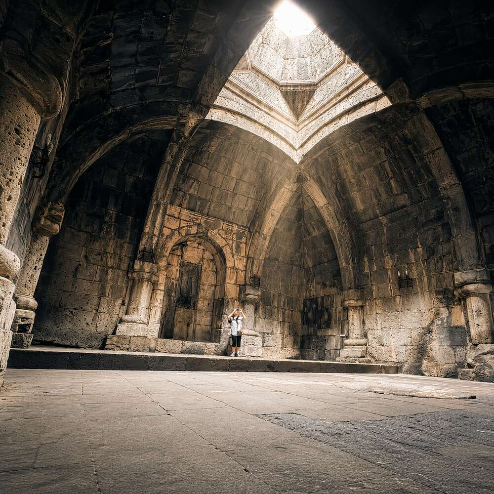
Lichtschacht im Gawit: gestaffelte, reich verzierte Steinringe um die zentrale Dachöffnung – eine der eindrücklichsten Konstruktionen mittelalterlicher armenischer Architektur.
Apsisfresko: In der Hauptkirche zeigt das Apsisfresko Christus als Pantokrator (Weltenherrscher), gestiftet vom armenischen Fürsten Chutulukhaga, dessen eigenes Porträt im südlichen Querschiff zu finden ist – ein frühes Beispiel dafür, wie sich weltliche Stifter in religiösen Bildprogrammen selbst verewigten.
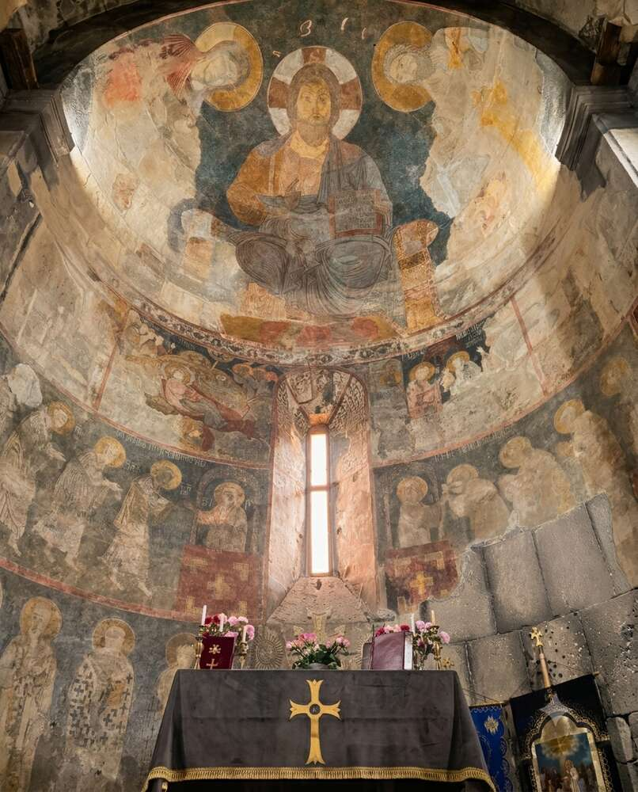
Christus Pantokrator in der Apsis der Surb-Nschan-Kirche, umgeben von Heiligenfiguren – die Farbpigmente sind über 900 Jahre alt und trotzdem noch klar erkennbar.
Insider-Fakt: Sajat-Nowa, Armeniens berühmtester Dichter und Troubadour des 18. Jahrhunderts (bekannt für seine Liebeslieder in armenischer, georgischer und aserbaidschanischer Sprache), verbrachte seine letzten Lebensjahre als Mönch hinter den Mauern von Haghpat – auf der Flucht vor höfischen Intrigen in Tiflis. Wer sich für armenisch-georgische Kulturgeschichte interessiert: der Regisseur Sergei Paradschanow (Museum in Jerewan, siehe Tag 1) widmete ihm 1968 den Film „Die Farbe des Granatapfels“.
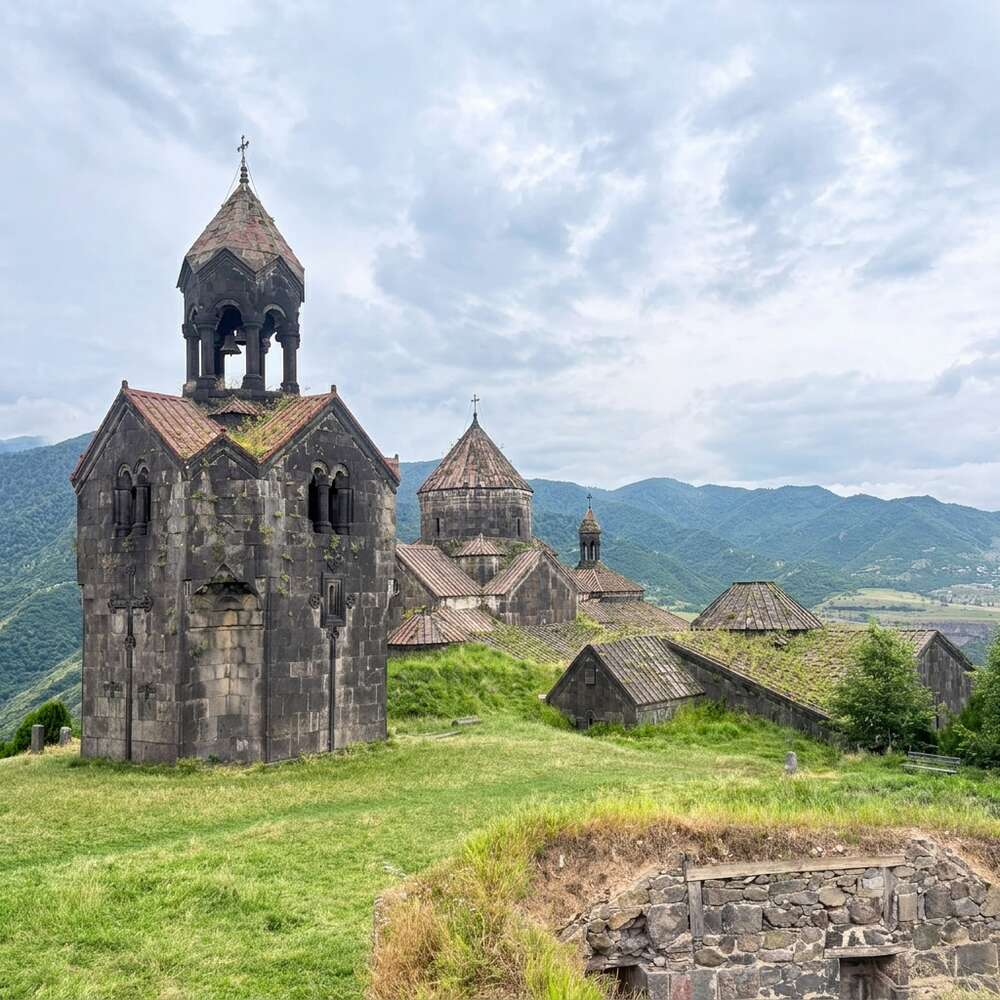
Der freistehende, dreistöckige Glockenturm (1245) an der höchsten Stelle der Anlage – einer der ältesten seiner Art in Armenien, zusammen mit dem baugleichen Turm von Sanahin.

Kirche und Glockenturm, durch das Blattwerk der Klosterbäume gerahmt – abendliches Licht kurz vor der Weiterfahrt nach Georgien.